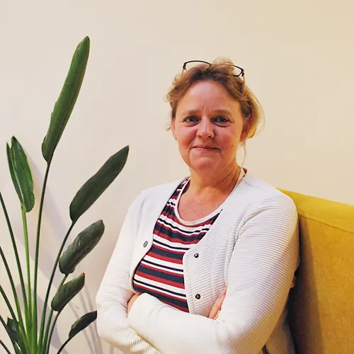
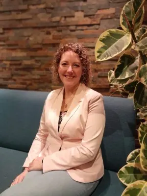

Nieuws ·
Monique Aarntzen en Jeanne Heesters nieuwe directie TVN Zorgt

TVN Zorgt stelt per 1 mei 2024 Monique Aarntzen en Jeanne Heesters aan als nieuwe directie. Aanleiding voor deze directiewisseling is het aanstaande vertrek van Monique van Eijken die sinds
1999 directeur van de organisatie is. In verband met de groei van de organisatie, en om een bredere draagkracht te kunnen realiseren is er gekozen voor een tweehoofdige directie die in samenspraak de organisatie bestuurt. Monique Aarntzen zal aantreden als directeur zorg en Jeanne Heesters wordt directeur bedrijfsvoering.

Verbindende jaren bij TVN Zorgt
Monique van Eijken blikt terug: “Al 25 jaar werk ik met veel passie, plezier en liefde samen met alle collega’s, met en voor cliënten om goede zorg te kunnen inzetten. Samen hebben we TVN Zorgt
gevormd tot wat we nu zijn: een mooie brede organisatie die vanuit waarde en mensgerichtheid de zorg wil bieden en die er is voor mensen. Het gaat me aan het hart om afscheid te nemen. Ik vind dat
ik heel mooi werk heb, maar het is ook intens en intensief. Het is na 25 jaar daarom tijd om het stokje over te dragen.”
Onder de betrokken en verbindende leiding van Van Eijken maakte TVN Zorgt de afgelopen jaren een flinke groei door. Sinds 2021 wordt de organisatie daarbij ondersteund door coöperatiepartner en
bestuurder Actief Holding B.V.. Die groei is nooit een doel op zich geweest, maar is het gevolg van de visie van verbinding en mensgerichtheid van waaruit Van Eijken handelt. “Als organisatie willen we
eigenlijk gewoon altijd het goede doen. Werken vanuit een mensgerichte visie, en inspelen op dat wat nodig is. Dat betekent dat als we een vraag zien die niet opgevuld wordt of als we zien dat kleine,
specialistische organisaties tussen wal en schip vallen, we gaan kijken naar een oplossing daarvoor. Soms betekent dat dat we nieuwe teams binnen onze organiatie oprichten, bijvoorbeeld recent nog
voor ambulante kindverpleging. Andere keren kiezen we er samen voor om organisaties toe te laten treden tot onze coöperatie waarbij zij in de basis zelfstandig blijven, maar met hulp van ons en via onze
contracten zorg kunnen leveren. Daarbij kijken we altijd naar de waarde die dit toevoegt voor mens en omgeving. Dat is toch wel het belangrijkste, naast dat organisaties vanzelfsprekend wel moeten
voldoen aan gestelde eisen.”
Van Eijken over haar opvolgers: “Het is een fijn idee dat ik mijn functie kan overdragen aan twee directeuren met elk hun eigen expertise. We hebben zorgvuldig gekeken naar de opvolging, omdat het
belangrijk is dat de visie geborgd blijften dat deze zich kan ontwikkelen. De organisatie is constant in beweging, en ik heb er het volste vertrouwen in dat deze bij Monique Aarntzen en Jeanne Heesters in
goede handen is.” Ze vervolgt: “Het is fijn dat één van mijn opvolgers, Jeanne Heesters, al bekend is met de organisatie en de waarden van waaruit we werken. Tegelijk is het mooi dat Monique Aarntzen
juist met een frisse blik en nieuwe inzichten naar de organisatie kan kijken. Zo behouden we het goede, in is er ruimte voor ontwikkeling.”
Zorgorganisatie met een missie
TVN Zorgt heeft een duidelijke missie: het leveren van mensgerichte zorg. Hierbij sluit de organisatie aan bij dat wat betekenisvol is voor de cliënten en hun omgeving. Er wordt gewerkt vanuit de visie van
Positieve Gezondheid, waarbij niet de ziekte maar een betekenisvol leven van mensen centraal staat. Een team van medewerkers uit verschillende disciplines binnen TVN Zorgt heeft gezamenlijk de nieuwe
directie geselecteerd. Zij zien in Jeanne Heesters en Monique Aarntzen de juiste personen om samen vorm te geven aan de toekomst van TVN Zorgt. Zij willen graag aan de slag met het verder uitrollen en
bestendigen van de waardengedreven zorg, waarbij de kernwaarden die de organisatie vier jaar geleden heeft geformuleerd leidend zijn.
Jeanne Heesters over haar benoeming: “In de zes jaar dat ik bij TVN Zorgt werk heb ik de organisatie zien groeien en ontwikkelen, en gezien met hoeveel passie en gedrevenheid onze zorgprofessionals
hun werk uitvoeren. Het is een eer en uitdaging om dat nu, in deze nieuwe functie, te mogen continueren en hier verder vervolg aan te geven. Mijn drijfveer in het werk is het in overeenstemming
brengen van de organisatievisie met het handelen binnen een organisatie, omdat ik ervan overtuigd ben dat hier de grondslag voor een gezonde, goed functionerende organisatie ligt. Voor TVN Zorgt wil
ik dat de komende jaren onder anderen doen door het invoeren en uitrollen van samenzeggenschap via de sociocratische methode, in plaats van medezeggenschap. Want richting bepalen doen we
samen.”
Monique Aarntzen vult aan: “In het verleden heb ik al meerdere keren samengewerkt met TVN Zorgt en viel de organisatie mij op een positieve manier op. Dit vanwege de bevlogen mensen die er werken
die allemaal de mensgerichte visie ademen. Er wordt altijd gekeken naar mogelijkheden, samenwerking en ontwikkeling om betekenisvol te kunnen zijn voor mensen. Dit past heel erg bij wie
ik ben. Het zorglandschap en de maatschappij zijn ontzettend in beweging en ik zie veel kansen doordat TVN Zorgt in de basis heel wendbaar is en innovatie hoog in het vaandel heeft staan. Het lijkt me
geweldig om deze kracht van TVN Zorgt nog verder te benutten en uit te bouwen. Ik ben heel dankbaar voor het vertrouwen en grijp deze kans graag aan om samen met Jeanne en alle medewerkers verder
te bouwen aan een mooie toekomst van TVN Zorgt”
Over Jeanne Heesters
Jeanne Heesters is opgeleid als B-Verpleegkundige in Ziekenhuis De Grote Beek in Eindhoven en heeft na enkele jaren een overstap gemaakt en in Utrecht de opleiding Personeel en Arbeid gevolgd. Hierna
bekleedde zij diverse functies op het gebied van personeel en organisatie. Sinds zes jaar is ze werkzaam bij TVN Zorgt waar ze is gestart als coördinator P&O en vervolgens daar ook de taken van coördinator
Back Office bij kreeg.
Over Monique Aarntzen
Monique Aarntzen studeerde aan de HAN Creatieve Therapie met de afstudeerrichting Muziektherapie. Hierna heeft zij zich middels de Bachelor Management in zorg en dienstverlening en
de Master Management & Innovatie gespecialiseerd in de managementkant van de zorg. De afgelopen jaren was zij werkaam bij verschillende zorgorganisaties in diverse leidinggevende functies.